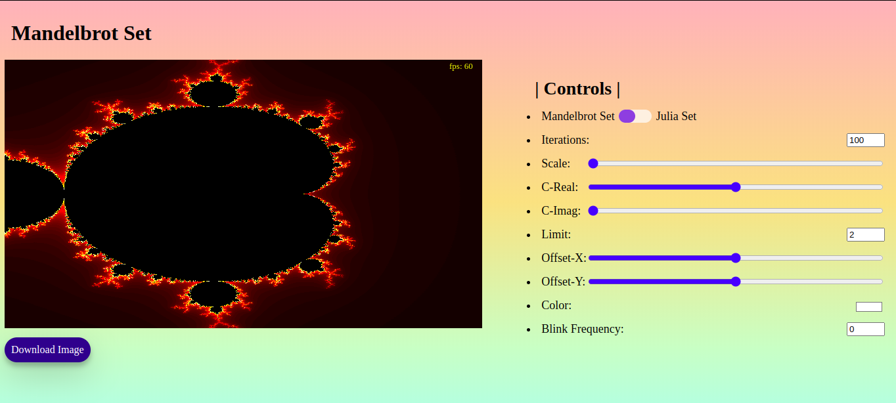

Mandelbrot set Image generator using Javascript and WebGL.
This JavaScript app generates Mandelbrot set and Julia set images using WebGL and GLSL shaders, and the result is displayed in HTML canvas.
Source Code: GitHub Link

This control lets us choose between Mandelbrot Set and Julia Set. Each set produces different image.
Number of iterations to use to produce the image. Higher values produces more detailed thus better images.
Scale represents zoom-in value. Combine scale and offsetX, offsetY to produce different images.
Value of real part of C in the Julia-set equation (f(Z) = Z2 + C), where C = x + iy thus C-Real = x;
Value of imaginary part of C in the Julia-set equation, C-Imag = y
Value of limit to use in iteration process. Limit is the value of abs(Z) beyond which the point in consideration is likely to diverge. Default limit value for Mandelbrot is 2.
Offset along x-axis
Offset along y-axis
Choose the tint colour of the generated images.
Animate the blinking of the image by changing the frequency of blinking.
Mandelbrot set reference: https://en.wikipedia.org/wiki/Mandelbrot_set
Julia set reference: https://en.wikipedia.org/wiki/Julia_set